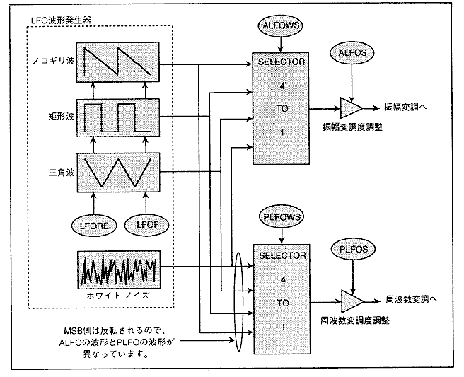
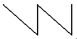
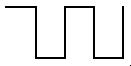
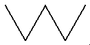

★HARDWARE Manual
★SCSPユーザーズマニュアル
★HARDWARE Manual
★SCSPユーザーズマニュアル
▲戻る
｜ 進む▼
SCSPユーザーズマニュアル/4.2 音源部レジスタ
■LFOレジスタ
- LFOは低周波数発振器のことで、音声信号の変調用として使用されます。
LFOは各スロットに１つ搭載されており、それぞれのスロットの振幅変調用の出力と周波数変調用の出力を持っています。
LFOの出力波形には、鋸歯状態(ノコギリ波)、矩形波（方形波）、三角波、ノイズ（ホワイトノイズ）の４種類があり、これらを任意に選ぶことができます。
LFOのブロック図を、図4.46に示します。ノイズの場合の波形を除く、ノコギリ波、矩形波、三角波は、リセットをかけること、および周波数変更を行なうことができます。またLFOの波形と変調度は、振幅変調側、
周波数変調側のそれぞれ独立に設定することができます。
図4.46 LFOのブロック図

- LFORE(Ｒ／Ｗ) ; LFO REset
- LFOのリセット有無を指定します。このビットを"1B"にすると、LFOはリセットされます。また、"0B"を書き込むことで、動作し始めます。
- LFOF[4:0](Ｒ／Ｗ) ; LFO Frequency
- LFOの発振周波数を指定します。
- 表4.14 発振器の発振周波数
| LFOF | 発振周波数(Hz) | | LFOF | 発振周波数(Hz) |
| 00H | 0.17 | | 10H | 2.87 |
| 01H | 0.19 | | 11H | 3.31 |
| 02H | 0.23 | | 12H | 3.92 |
| 03H | 0.27 | | 13H | 4.79 |
| 04H | 0.34 | | 14H | 6.15 |
| 05H | 0.39 | | 15H | 7.18 |
| 06H | 0.45 | | 16H | 8.6 |
| 07H | 0.55 | | 17H | 10.8 |
| 08H | 0.68 | | 18H | 14.4 |
| 09H | 0.78 | | 19H | 17.2 |
| 0AH | 0.92 | | 1AH | 21.5 |
| 0BH | 1.10 | | 1BH | 28.7 |
| 0CH | 1.39 | | 1CH | 43.1 |
| 0DH | 1.60 | | 1DH | 57.4 |
| 0EH | 1.87 | | 1EH | 86.1 |
| 0FH | 2.27 | | 1FH | 172.3 |
- ALFOS[2:0](Ｒ／Ｗ) ; Amplitude-LFO Sensitivity
- LFOによる、振幅変調のかかり具合を指定します。この振幅変調により、トレモロ効果(音量を周期的に変動させることにより生じる現象)を表現することができます。
- ALFOWS[1:0](Ｒ／Ｗ) ; Amplitude-LFO Wave Select
- 表4.15のようなAM変調波形を指定します。
- 表4.15 LFOによるAM変調波形
| ALFOWS | ＡＭ変調(ALFO) |
|---|
| 音量 | ALFO[7:0] | LFO波形 |
| 0 | -0dB | 0
:
FF |  |
| 1 | -0dB | 0
:
FF |  |
| 2 | -0dB | 0
:
FF |  |
| 3 | -0dB | 0
:
FF | |
- PLFOWS[1:0](Ｒ／Ｗ) ; Pitch-LFO Wave Select
- 表4.16のようなPM変調波形を指定します。
- 表4.16 LFOによるPM変調波形
| ALFOWS | ＰＭ変調(ALFO) |
|---|
| ピッチ | PLFO[7:0] | LFO波形 |
| 0 | +
0
- | 7F
00
80 | |
| 1 | +
0
- | 7F
00
80 | |
| 2 | +
0
- | 7F
00
80 | |
| 3 | +
0
- | 7F
00
80 | |
- ALFO [7:0] およびPLFO [7:0]は、LFOの出力するビット幅(データ)を表わします。
- PLFOS[2:0](Ｒ／Ｗ) ; Pitch-LFO Sensitivity
- LFOによる、周波数変調のかかり具合を指定します。この周波数変調により、ビブラート効果(音の発振周波数を周期的に変動させることにより生じる現象)を表現することができます（表4.17）。
- 表4.17 振幅変調および周波数変調の度合い
| ALFOS | EGへのミキシング | PLFOS | ピッチへの影響 |
| 0 | 影響無し | 0 | 影響無し |
| 1 | 0.4dBの変位 | 1 | ±7セントの変位 |
| 2 | 0.8dBの変位 | 2 | ±13.5セントの変位 |
| 3 | 1.5dBの変位 | 3 | ±27セントの変位 |
| 4 | 3dBの変位 | 4 | ±55セントの変位 |
| 5 | 6dBの変位 | 5 | ±112セントの変位 |
| 6 | 12dBの変位 | 6 | ±230セントの変位 |
| 7 | 24dBの変位 | 7 | ±494セントの変位 |
▲戻る
｜ 進む▼
★HARDWARE Manual
★SCSPユーザーズマニュアル
Copyright SEGA ENTERPRISES, LTD., 1997